Baoshui Primary School
project developed at Holmes Miller Architects, Guangzhou (CN), 2018
Baoshui Ecological Primary School – A Space to Grow, Learn, and Share The Baoshui Primary School project is designed to provide students with a safe, pollution-free, green, and comfortable environment for learning and daily life. Nestled among gardens and greenery, the school is envisioned as an ecological, garden-style campus where nature and education are deeply intertwined. Abundant green pathways and bright, airy spaces help create a serene atmosphere—ideal for concentration, imagination, and personal development. The campus is conceived as a model of sustainable education: a “green learning garden” that nurtures both academic and human growth. Inspired by President Xi Jinping’s words — “Knowledge should be absorbed like a sponge soaks up water” — the design seeks to foster an immersive educational environment. Within this “ocean of knowledge,” children are encouraged to learn continuously through spaces that promote interaction, discovery, and play. Three core concepts define the architectural strategy: communication, learning, and sharing. These values are reflected in the spatial composition, which brings together diverse functions into a cohesive and interactive whole—creating a dynamic, inclusive, and inspiring school experience.
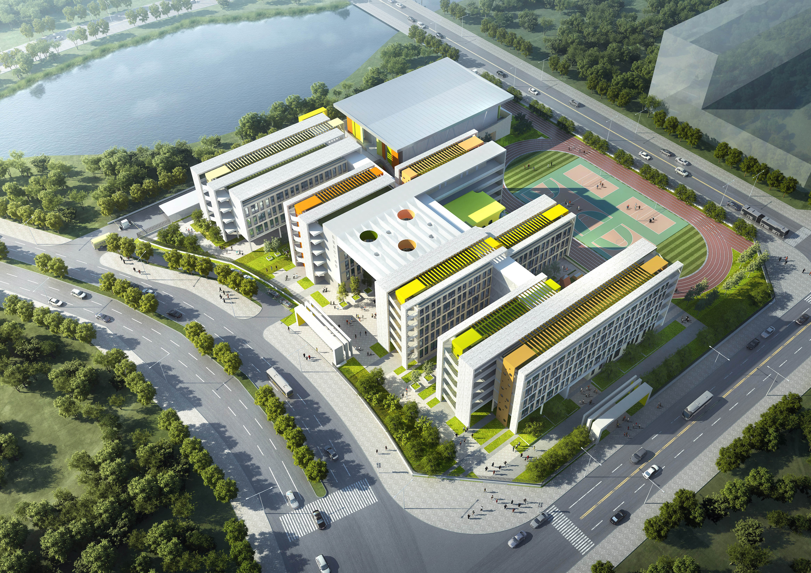
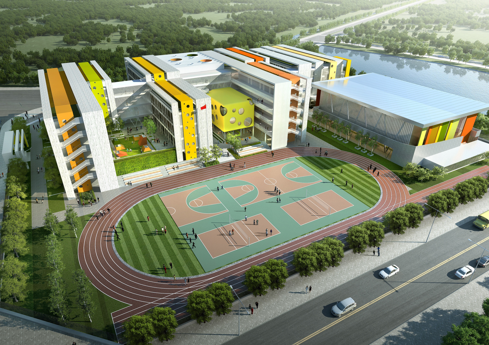
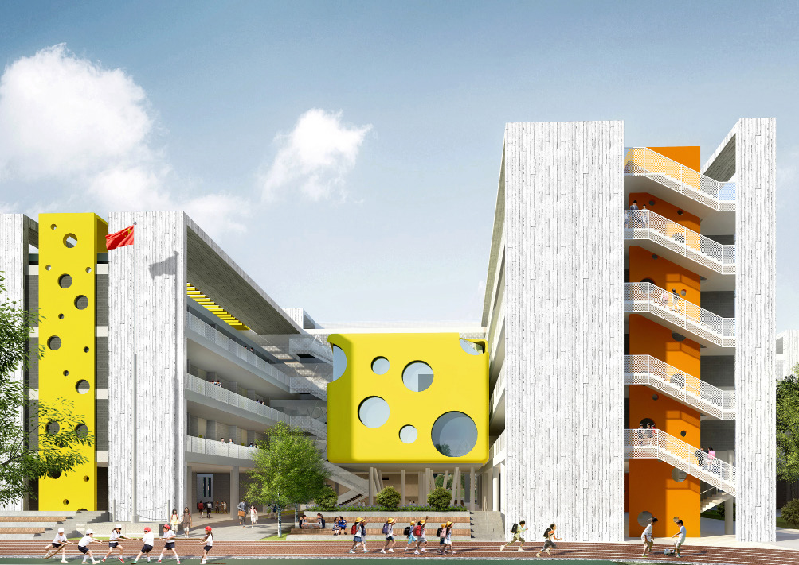
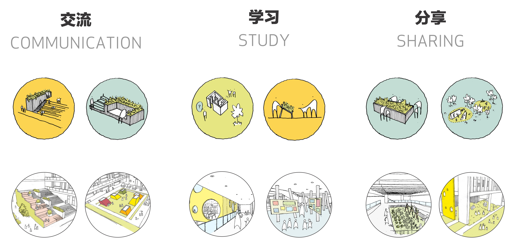

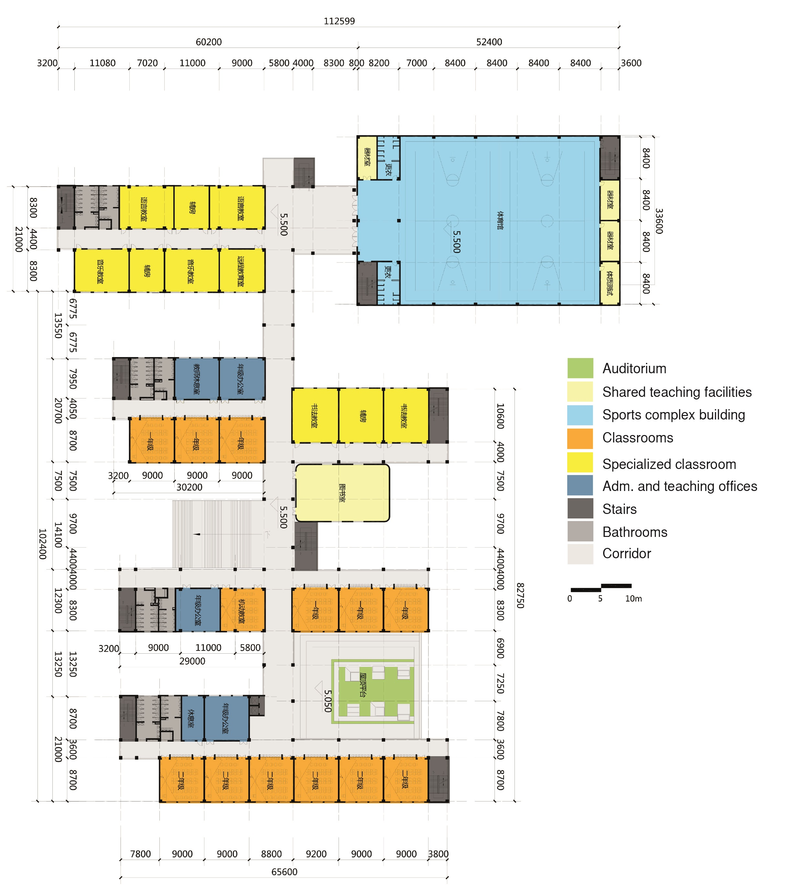
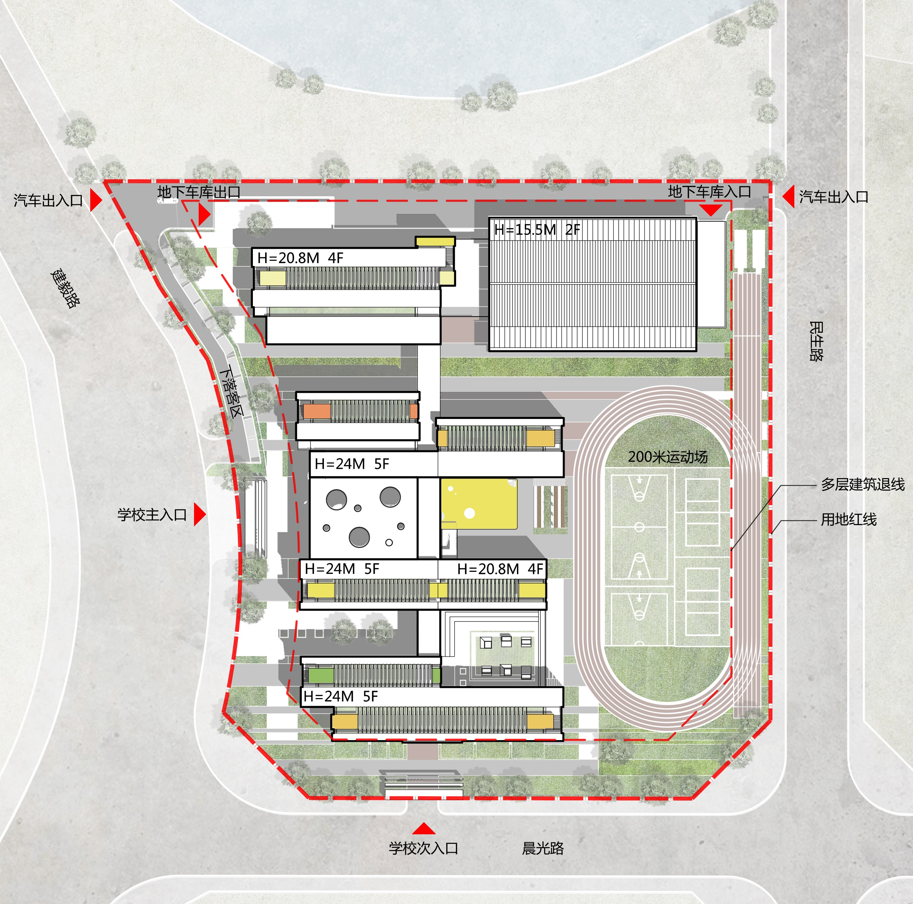
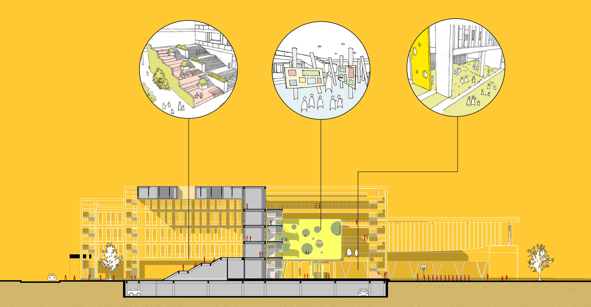
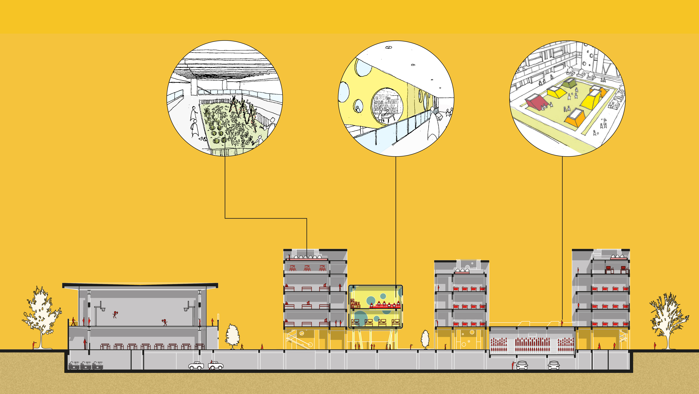
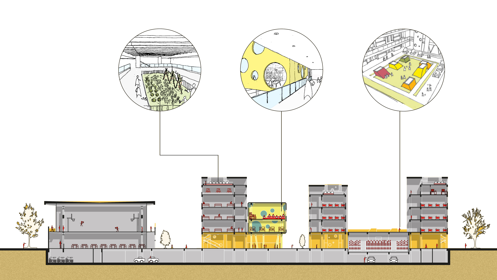
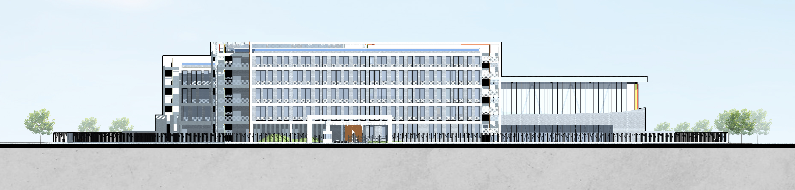
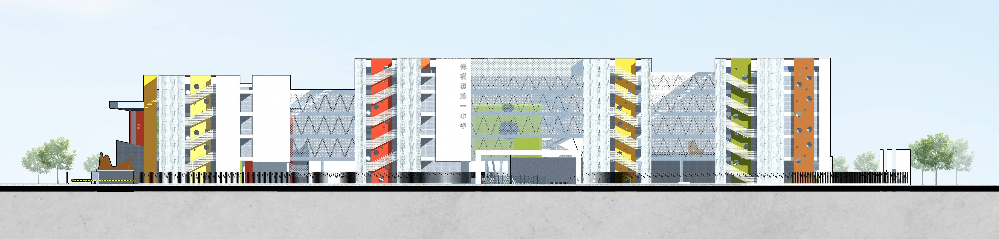
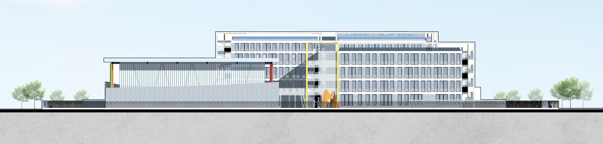
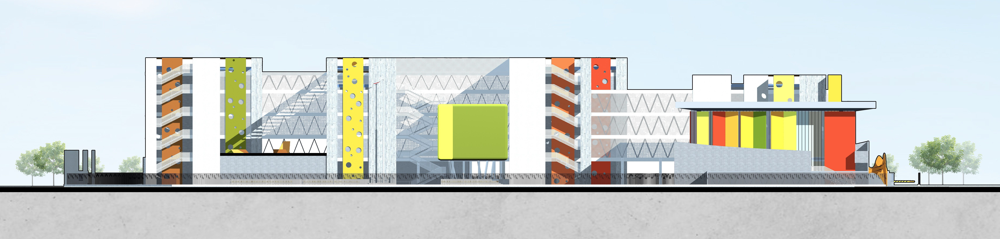